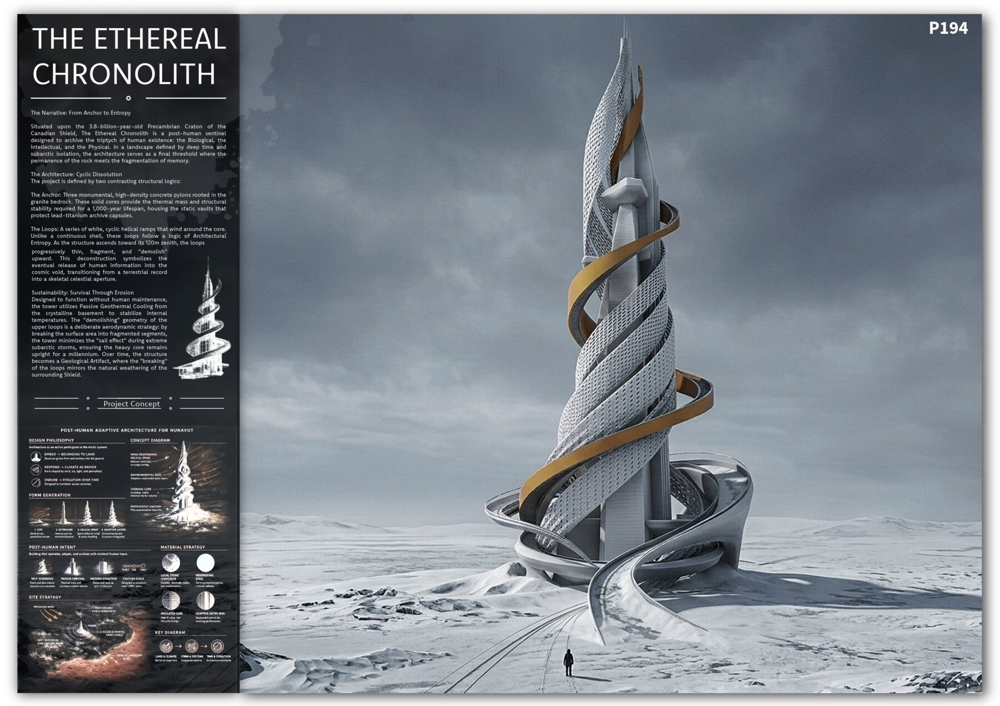
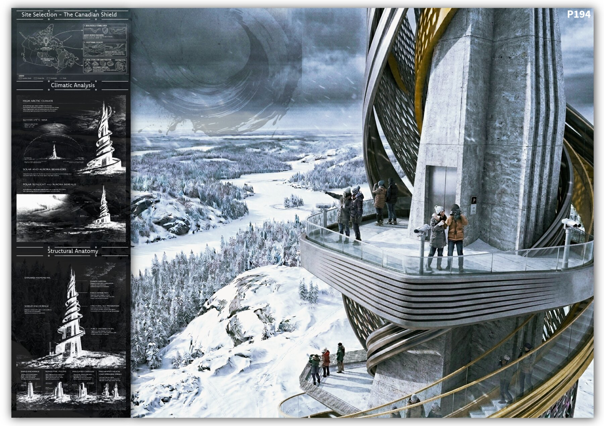
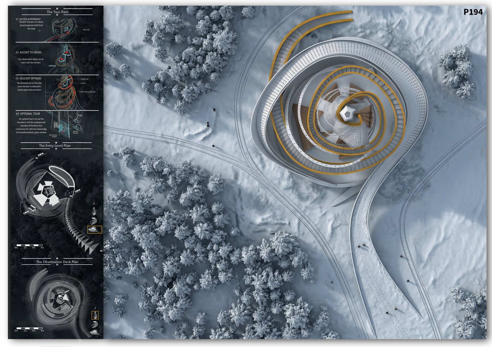
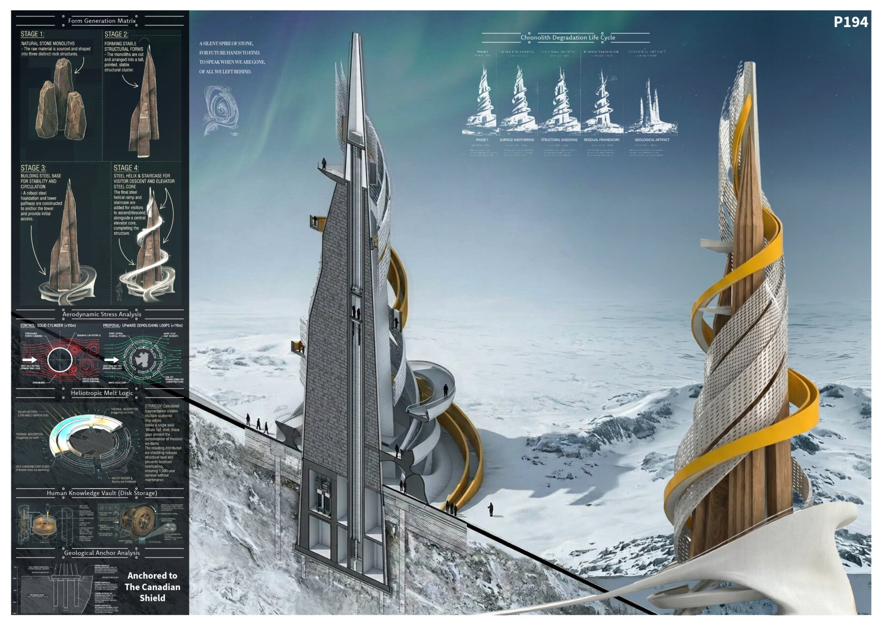

/ COMPETITION
The Ethereal Chronolith
An Archibest Observation Tower entry for the deep-time landscape of the Canadian Shield — a 120-metre post-human sentinel that roots humanity’s record in billion-year-old granite, then lets its upper loops thin, fragment and “demolish” upward, releasing memory to the sky.

/ CONCEPT
A sentinel where deep time meets the fragmentation of memory.
Set on the 3.8-billion-year-old Precambrian craton of the Canadian Shield, the Ethereal Chronolith is conceived as a post-human sentinel — a building whose real client is the future. It sets out to archive the triptych of human existence: the biological, the intellectual and the physical. In a subarctic landscape defined by isolation and deep time, it becomes a final threshold where the permanence of the rock meets the fragmentation of memory.
The Archibest brief fixed no site, so the location itself is the argument — the oldest, most stable ground on Earth, chosen for a structure meant to outlast its makers. Humanity’s knowledge is sealed into lead-titanium archive capsules and lowered into vaults cut from the bedrock, held behind glass for whoever, or whatever, finds it next.
The intent is written plainly across the boards: a silent spire of stone, for future hands to find, to speak when we are gone, of all we left behind.
The Anchor
Three monumental, high-density concrete pylons root into the granite bedrock. These solid cores carry the thermal mass and structural stability a 1,000-year lifespan demands, and house the static vaults that protect the lead-titanium archive capsules.
The Loops
A series of white, cyclic helical ramps wind around the core. Rather than a continuous shell, they follow a logic of architectural entropy: climbing toward the 120-metre zenith, the loops progressively thin, fragment and “demolish” upward — a terrestrial record dissolving into a skeletal celestial aperture.
Survival through erosion
With no human maintenance assumed, passive geothermal cooling drawn from the crystalline basement stabilises internal temperatures. The fragmented upper form is also aerodynamic — breaking the surface into scattered segments cuts the “sail effect” of subarctic storms, so the heavy core stays upright for a millennium. In time the tower becomes a geological artifact, its breaking loops echoing the weathering of the Shield.
/ BY THE NUMBERS
The site is chosen for three reasons the boards set out in turn: a geologically stable area of ancient bedrock; the exceptional, unspoiled scenery of the Shield; and local stone — granite and gneiss — as a low-impact construction material. The climatic study reads a high-arctic setting of long polar nights and brief +15°C summers, with the tower oriented to frame the low polar sun and the aurora that rides the geomagnetic pole through the dark winters.

Access & entrance
The journey begins on the approach ramp, rising to an elevator entrance set four metres above the ground plane — the tower met first from below.
Ascent to the decks
A single elevator carries visitors to two stacked observation decks, each cantilevered out over the frozen forest and the river winding below.
Descent
The way down is a choice: back through the elevator, or a slow, scenic spiral staircase that unwinds the tower’s helix on foot.
The knowledge vault
An optional route drops below ground to the data-disc chamber, where the collective knowledge of humanity sits behind a glass window — the archive made briefly visible before it is sealed for the millennium.

Four form-generation moves take the tower from raw stone monoliths to a stable structural cluster, a steel base for circulation, and finally the steel helix and central elevator core. From there it is designed to come apart on purpose — the degradation life cycle choreographs the “breaking” of the loops across a millennium, so that ruin becomes the last stage of the design rather than its failure.
